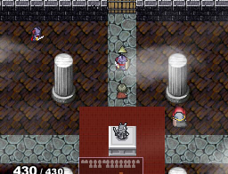
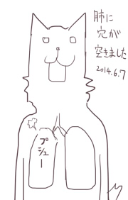

シルバーセカンド開発日誌
2014年06月
■
2014-06-28 (土) 片道+ 42 決戦ｼﾅﾘｵ中▼
ただいま「決戦シナリオ」を作成中です。
クオリティは別として、埋めるべきデータは70％くらい完成してきた感触です。
※片道勇者とは特に関係ないお絵かき
決戦シナリオも結局は1プレイで片付けるべきミッションですから、
複雑かつ長期戦化してもリトライする気力が失せるよな、ということで、
「ほんの少しのアイテム集め」と「かなりの強さ」を揃えると
エンドに向かうことができるような、サッパリした感じに仕上げる予定です。
書いてみたエピローグがあんまりエンドっぽくなってないとか、
後半の敵が頑丈すぎる気がするとか、色々問題を感じる部分があるので、
その辺りの調整にもう少し時間をかけることになりそうです。
「ただひたすら時間がかかる」デザインよりは、
「難しいけど終わるときは早く終わる」くらいを目指したいですね。
基本的に、ゲーム開発で一発目に作ったものは
快適さに欠けるバランスになりがちです。
開発者がよく行うのは場面場面のテストなので、
その範囲では面白くても、いざ通しでプレイすると
ガマンできなくなるということはよくあります。
特に「敵の硬さ」は一番ミスりやすいところなので、
もうちょっとうまく調整していきたいですね。
超後半の敵の攻撃力が高くなりすぎるのも、
ちょっと何とかしたいところです。
以下は拍手コメントです、いつもありがとうございます！
＞つまり狼煙様のキャラは"はく"系少女よりも
＞"はかない"系少女の方が多いんですね！
はかない系少女は気を許すとどんどん増殖するので
1作品に2人までにしたいところです！！
あと他の方から“はいてない系”少女というコメントをいただきましたが
そんなキャラは滅多にいませんのでご了承ください。
たまにいますけど。リトルちゃんとかシルノ版スケイルとか。■
2014-06-21 (土) 片道+ 41 ﾛｰｸﾞﾗｲｸのｺﾞｰﾙ▼
決戦シナリオの構想を進めつつ、小さいバグやインターフェース修正、
エディタの直せなかったバグへの対応などを行っていました。
決戦シナリオの構想中ということで、
ローグライクにおける「ゴール」の作り方を色々整理しています。
メモ帳に思いつくだけざっと書き出したのは、以下の3つでした。
■一定距離だけ進めばクリア
不思議のダンジョンシリーズに始まる、ほとんどのローグライクで
採用されているゴールです。30階まで行けばクリアとか、そういう形式ですね。
途中でクリアが容易になるアイテムが出た場合でも作業プレイにならないよう、
また、ピンチになっても逆転できるチャンスがまだあるような造りに
バランス設定するのが、ちょっと大変そうなゴールです。
この形式は、だいたい「アイテムや経験値を稼ぎやすいゾーン」と、
「危険でアイテムを消費しやすいゾーン（基本は急いで通過する）」を
うまく配分することでバランスを取っている印象です。
これが宇宙船ローグライク作品の「FTL:Faster than light」だと、
安全なエリアと危険なエリアを自分で選んで通ることができました。
十分な戦力があるなら危険エリアで敵を倒し、そうでないなら安全エリアで
ほどほどに安全に稼ぐという判断ができるのが、なるほどと思います。
片道勇者では、「やさしい旅」の魔王撃破クリアや、「世界の果て」エンド、
プラス版で新たに搭載した「クエスト」がこの形式のゴールに当たります。
この形式は、バランス調整がヘタだと部分的に作業になりがちになって
面白くなくなってしまうことがままあります。
作者としては、「世界の果て」がかなり作業プレイになっているという認識です。
今さらですが、データ量的に考えてオリジナル版の「果て」は
1000kmくらいにしておけばよかった気がします。
■一定以上強くなればクリア
プレイヤーキャラが一定水準の強さを得てプレイが安定したんだったら
あとは消化試合だからもうそこでゲーム終わりでいいじゃん、
という考え方のゴールです。戦略SLGの後半など、たまに消化試合になりがちです。
私自身、そこまで渋いバランス調整ができないことを内心理解していたのか、
片道勇者のメインである「普通」難易度以上での魔王撃破クリアは
この発想を意識した造りになっています。魔王は定期的に出現し、
倒せないときは逃げ、もう倒せるなら立ち向かってとっとと倒すのです。
運が悪いとなかなか強くなれず、次第にステージも段々と難しくなっていくので
大変なのですが、その中で生き残れるほど強くなっていたら、
いつのまにかザコ敵よりも魔王のほうが攻撃力が弱くなっている、
というバランスにしています。結界も薄くなりますしね。
このやり方は、バランス調整がヘタでも割と適切なタイミングでゲームが終わるので、
時間をかけずに完成させる手段として悪くはなかったと思います。
あまり他のローグライクで採用されてないのもあって、
「色んなヘタさを隠す方法としてこれは使えるぜ！」と思っていました。
実際、オリジナル版は自分でいま見ても未熟さが目立ちます。
プラス版ではちょっと改善されると思いますが、遊ぶ皆さんから見ると
正直言って、プラスでも解消しきれてないんじゃないかなとは思っています。
ローグライクの奥が深すぎて、とても私の成熟が追いつきそうにありません。
■特定のアイテムがそろえばクリア
特定の種類のアイテムをそろえるとクリア、というゴールです。
色々考えた中の一つだったんですが、直接的には採用しませんでした。
裏ボス戦の展開として、このゴールを一部だけ採用しています（アレが必要です）。
ただ、大抵の人はその準備を次元倉庫で済ませたのではないでしょうか。
これは、私の調整がおおざっぱだったからに他なりません。
調整の仕方にもよりますが、このゴールの具体的な問題としては、たとえば、
「アイテムがそろわず、すさまじい距離を歩いてもクリアできなかった」り、
一方で、「強くなって完全に作業プレイと化しているのにまだクリアできない」
といった、グダグダな場面や退屈な場面が発生しやすいことです。
オリジナル版の裏ボスでさえ次元倉庫の利用をほぼ前提としたもので、
倉庫なしの素クリアは「めっちゃ難しいゴール」という立ち位置にして、
なかなか必要アイテムが見つからない場合の想定は割と投げっぱなしでした。
今になってみると、ドロップしやすい「Ｘなる武器のカケラ」を4個集めると
必要なものと交換できるとか、そういった仕組みにしてもよかったと思います。
とにかくこれは、かなり考えないと最もグダグダになりやすいゴールだと思います。
もし「アイテムさえそろえばその時点でクリア」という形にする場合、
このゴールは最悪プレイヤーキャラが強くなくてもクリアできるので、
「ずっとジリ貧のままだけどアイテムがそろいさえすればクリアできる！」
という負け続け展開にそこそこ向いている気がします。
なのでこのゴールは、「プレイヤーが弱くて生き残るのが大変な状態」、
かつ「クリアアイテムが比較的手に入りやすい状態」でありながら、
「狙わないと早くそろわない（自然に手に入るなら「距離」と同じだから）」
という複数の条件を満たしたサバイバル型にしないとゲームとして成立しにくいのかな
と私は考えました。
そこで、「特定の条件を満たすとたくさんのポイントが入る、そうでなくても
ジワジワポイントが入り、一定ポイントが溜まるとクリア」という形にして、
このゴールの発想は「観光客」クラスの特殊エンド用に受け継がれました。
アイテムじゃなくてポイント形式にすることでゴールに少しずつでも近づきやすくして、
かつ狙えばいっぱいゴールに近づける（死ぬ危険も増える）という形を目指しています。
このゴールはたぶんこのあたりが落としどころじゃないかなあ、と思いつつ、
実際やってみるとどんな問題が出てくるかは分かりません。
しかし、一つ一つ分析して、よくしていきたいなとは考え続けています。
ローグライクは本当に色々できそうで夢が溢れるジャンルなんですが、
うまくまとめるのもとても難しいゲームだと思います。
次に活かせるよう、学びながら作ってレベルアップを続けていきたいと思います。■
2014-06-14 (土) 片道+ 40 決戦シナリオ▼
クラス解放シナリオが一段落し、次はいつでも開発を
終わらせられるように「決戦シナリオ」の作成を始めることにしました。
というのも「アレとアレを作らないと終わりにできない」状態よりは
「もう最低限必要なのは作り終わったから後は面白さを足すだけだ！」
という状態のほうがモチベーションが高くなるからです。

今のところ大きな作業はその「決戦シナリオ」と、
「仲間を何人かくらい増やしたい」なと思っているくらいです。
残りは膨大な小さい調整とデータ追加で、
途中で何か思いついたら随時追加していく予定です。
とはいえ、その「残り」に一番時間がかかっちゃうんですけれどね。
しかし、もともとクリアへの道が数種類しかないゲームとはいえ、
追加パッケージとして考えてみると、もうちょっとくらい
目玉が欲しいかなと思うところもあるので、
その辺りで何とか目玉を用意できないかなと徐々に検討中です。
シレン5を遊んでみたときは、クリアまではイベントがあって面白いんですが
クリア後のダンジョンにストーリー要素が少なくて
自分にとってモチベーションを感じにくい部分もどこかありました。
そこはまあ好みの問題といえばそうなんですが、せっかくなので何とか
決戦シナリオまでへの導線を繋げられるよううまいことパーツを組み上げたり、
必要なデータを見定めて追加していきたいなと思った次第です。
データはそろってきたので、次は簡単でもいいから、
何か「進んでるな」と実感できる仕組みを考える必要がありそうです。
以下は前回の気胸についていただいたコメントです。
＞「私も気胸で入院したことがあります。一度目は補助具を付けて
＞ 自然治癒しましたが、10年くらい後にまたなりまして、その時は
＞ 手術しなければなりませんでした。大変ですが、頑張って下さい」
＞「私も気胸経験者なのですが、2回目の発病で手術までいったので、
＞ マジで気をつけてください。1週間くらい動けなくなるので。」 .
＞「気胸は再発が多いのでいずれ慣れますよ」
こここここわい情報ありがとうございます！
おかげで異常を感じたらすぐ病院に飛び込む心の準備ができました。■
2014-06-07 (土) 肺が…破れた…！？▼【コポ……コポ……】
週のまんなか頃の話ですが、私の肺の一部が破れました。

胸と背中にこれまで感じたことのない妙な鈍痛が起きたので、
「もし心臓だったらまずい死ぬ」と思って病院に駆け込んだら、
なんと肺の病気（というか破損？）のようでした。
死ぬことはなさそうなので、ひとまず一安心です。
いまのところ安静療法中です！
外傷なしに肺の一部が破れるこの症状は、【自然気胸】というそうです。
タバコは一切吸ってないのについにやらかしたかという感じですが、
激しすぎる運動をしたときの息切れしやすさが2割くらい増えたかなというくらいで
生活には支障がありません。ただ胸の奥に変な感触があって落ち着きません。
あと空気が漏れてるのか知りませんが、
横になったとき、胸の奥あたりに「コポ……コポ……」という感触を
感じることがあるのも気胸の現象だそうです。
（ご飯を食べた後の消化時とも少し似てるけど、肋骨の下で起きる感じがする）
やせ形の若い男性の方に多いらしいので、もしそんな気配がしたら
ゴホゴホ言う作業や仕事を避けるとか、病院に行ったほうがいいかもしれませんね。
皆さまもお体にはお気を付けて！
と、ひとまず学んだことの整理でした。
実際のところ、思い出してみれば前々からそれらしい現象はあったので、
今回たまたまそれが表面化しただけだと思います。
とはいえ、パフォーマンスが下がってしまうのはいただけないので、
なるべく体を大事にしつつ、やりたいことはしっかりやりきってしまいたいですね。
以下は気になった拍手コメント返信です。いつもありがとうございます！
＞（前記事の）二刀流について答えて下さりありがとうございました！
＞二刀目は攻撃側:体力or機敏＋武器攻撃力＋1D6 .
＞防御側:体力or機敏＋1D6 で合っていますか？ .
＞そして攻撃側が1D6で3を出したら二刀目をもう一度ロールですよね
実は【防御側：体力or機敏＋2D6】のつもりだったので、
あんまり役に立たないスキルとして設計されています。
全体の設計思想として、【消費HP＋α＝ダメージ期待値と同等】なので、
消費HP1の【二刀流】は弱い相手にさらに追撃するか、
【捨て身】をさらに強化する場面での運用がメインだと思います。
なお、【攻撃側で1D6で3を出したら二刀目をもう一度ロール】
できるのはその通りで合っています。
＞SmokingWOLFさんの作るゲームはエンディングにおいて、主人公が
＞消えたり、●●が獣化したままなど主人公が最善の行動をとっても
＞悲しげな要素が入ることが多いと思うんですが何かそういった .
＞こだわりみたいなものがあるんでしょうか .
「お別れ」という展開は、ワンゲームの終わりを告げるのにあたって
すごく使いやすいので私は多用しています。●●が獣化したままなのは
理由を言うと怒られそうですが、片道勇者オリジナル版の開発後半、
「とにかく早く完成させないと」と感じて長くなってきた時期に
●●のエピローグを書いたためモチベーション的にすでに限界の状態で、
とてもゼロから書き直す気にならなかったからという理由が大きいです。
もう一点は、「高速クリアでも●●のその後が分かるようにするため」です。
これは、ゲーム開発においては「一見どうでもいい理由で
ひどい結果になることがたまにある」という一例かもしれません。
物語の中で説明やこれといった意味もなく逝ってしまう人は
たいていその犠牲者のような気がします。 2014年06月
Copyright © SmokingWOLF / Silver Second
 カテゴリ: 片道勇者
カテゴリ: 片道勇者 カテゴリ: 片道勇者
カテゴリ: 片道勇者